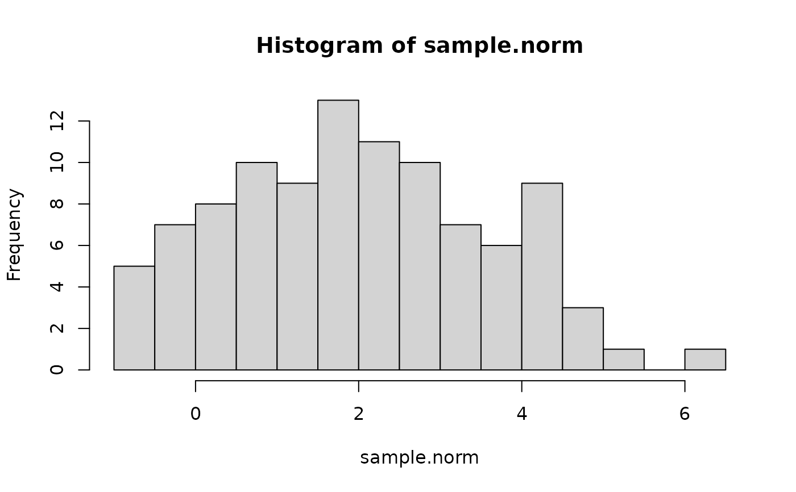
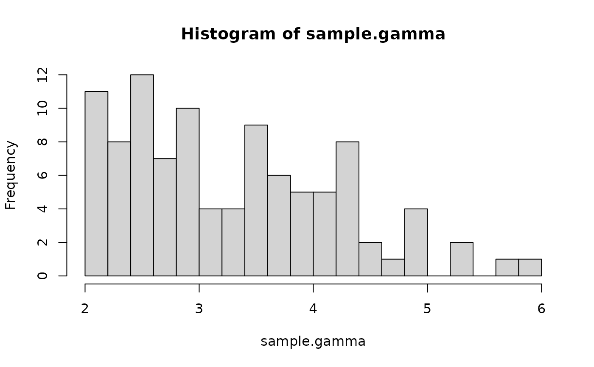
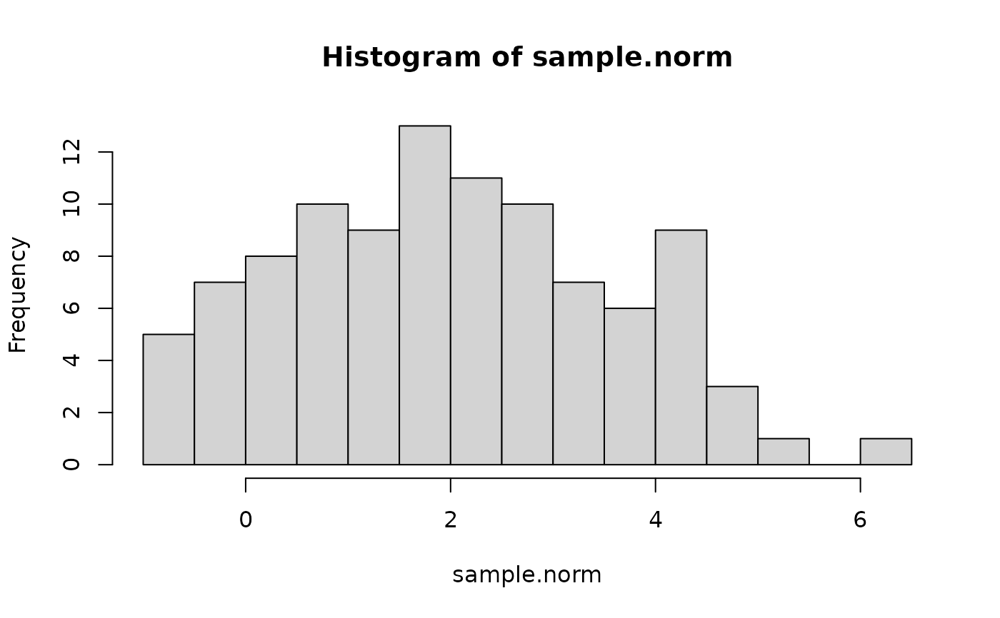
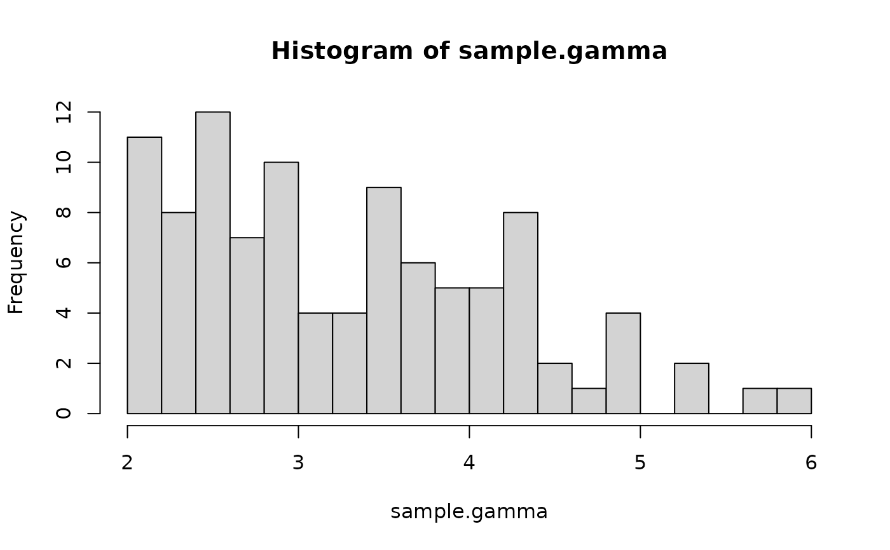

The Truncated Exponential Family
Source:R/a_rtrunc.R, R/beta.R, R/binomial.R, and 11 more
rtrunc.RdRandom generation for the truncated exponential family distributions. Please ferer to the "Details" and "Examples" section for more information on how to use this function.
Usage
rtrunc(n, family = "gaussian", faster = FALSE, ...)
rtrunc.beta(n, shape1, shape2, a = 0, b = 1)
rtruncbeta(n, shape1, shape2, a = 0, b = 1)
rtruncbinom(n, size, prob, a = 0, b = size)
rtruncchisq(n, df, a = 0, b = Inf)
rtrunccontbern(n, lambda, a = 0, b = 1)
rtruncexp(n, rate = 1, a = 0, b = Inf)
rtruncgamma(n, shape, rate = 1, scale = 1/rate, a = 0, b = Inf)
rtruncinvgamma(n, shape, rate = 1, scale = 1/rate, a = 0, b = Inf)
rtruncinvgauss(n, m, s, a = 0, b = Inf)
rtrunclnorm(n, meanlog, sdlog, a = 0, b = Inf)
rtruncnbinom(n, size, prob, mu, a = 0, b = Inf)
rtruncnorm(n, mean, sd, a = -Inf, b = Inf)
rtruncpois(n, lambda, a = 0, b = Inf)
rtrunc_direct(n, family = "gaussian", ...)Arguments
- n
sample size
- family
distribution family to use
- faster
if
TRUE, samples directly from the truncated distribution (more info in details)- ...
individual arguments to each distribution
- shape1
positive shape parameter alpha
- shape2
positive shape parameter beta
- a
point of left truncation
- b
point of right truncation
- size
target for number of successful trials, or dispersion parameter (the shape parameter of the gamma mixing distribution). Must be strictly positive, need not be integer.
- prob
probability of success on each trial
- df
degrees of freedom for "parent" distribution
- lambda
mean and var of "parent" distribution
- rate
inverse gamma rate parameter
- shape
inverse gamma shape parameter
- scale
inverse gamma scale parameter
- m
vector of means
- s
vector of dispersion parameters
- meanlog
mean of un-truncated distribution
- sdlog
standard deviation of un-truncated distribution
- mu
alternative parametrization via mean
- mean
mean of parent distribution
- sd
standard deviation is parent distribution
Value
A sample of size n drawn from a truncated distribution
vector of one of the rtrunc_* classes containing the sample
elements, as well as some attributes related to the chosen distribution.
Details
One way to use this function is by calling the rtrunc
generic with the family parameter of your choice. You can also
specifically call one of the methods (e.g. rtruncpois(10, lambda=3)
instead of `rtrunc(10, family="poisson", lambda=3)). The latter is more
flexible (i.e., easily programmable) and more robust (i.e., it contains
better error handling and validation procedures), while the former better
conforms with the nomenclature from other distribution-related functions in
the stats package.
Setting faster=TRUE uses a new algorithm that samples directly from
the truncated distribution, as opposed to the old algorithm that samples
from the untruncated distribution and then truncates the result. The
advantage of the new algorithm is that it is way faster than the old one,
particularly for highly-truncated distributions. On the other hand, the
sample for untruncated distributions called through rtrunc() will no longer
match their stats-package counterparts for the same seed.
Note
The current sample-generating algorithm may be slow if the distribution is largely represented by low-probability values. This will be fixed soon. Please follow https://github.com/ocbe-uio/TruncExpFam/issues/72 for details.
Examples
# Truncated binomial distribution
sample.binom <- rtrunc(
100, family = "binomial", prob = 0.6, size = 20, a = 4, b = 10
)
sample.binom
#> [1] 9 10 10 10 8 10 10 9 9 8 9 9 10 9 10 8 9 9 8 9 10 9 10 10 9
#> [26] 9 8 9 10 10 9 8 10 10 8 9 7 9 10 10 10 9 9 10 10 8 9 10 10 10
#> [51] 10 8 10 10 8 10 9 10 6 10 8 9 9 9 10 10 10 7 10 10 10 10 10 10 9
#> [76] 9 10 9 8 9 10 9 8 7 7 10 8 9 7 10 10 10 10 10 9 10 10 9 10 10
plot(
table(sample.binom), ylab = "Frequency", main = "Freq. of sampled values"
)
# Truncated Log-Normal distribution
sample.lognorm <- rtrunc(
n = 100, family = "lognormal", meanlog = 2.5, sdlog = 0.5, a = 7
)
summary(sample.lognorm)
#> Min. 1st Qu. Median Mean 3rd Qu. Max.
#> 7.079 9.866 13.547 15.348 18.556 46.786
hist(
sample.lognorm,
nclass = 35, xlim = c(0, 60), freq = FALSE,
ylim = c(0, 0.15)
)
 # Normal distribution
sample.norm <- rtrunc(n = 100, mean = 2, sd = 1.5, a = -1)
head(sample.norm)
#> [1] 2.2809932 1.9207768 2.4833743 0.3449657 -0.2869259 2.7655663
hist(sample.norm, nclass = 25)

# Gamma distribution
sample.gamma <- rtrunc(n = 100, family = "gamma", shape = 6, rate = 2, a = 2)
hist(sample.gamma, nclass = 15)

# Poisson distribution
sample.pois <- rtrunc(n = 10, family = "poisson", lambda = 10, a = 4)
sample.pois
#> [1] 12 9 11 7 6 11 9 11 12 11
plot(table(sample.pois))
# Normal distribution
sample.norm <- rtrunc(n = 100, mean = 2, sd = 1.5, a = -1)
head(sample.norm)
#> [1] 2.2809932 1.9207768 2.4833743 0.3449657 -0.2869259 2.7655663
hist(sample.norm, nclass = 25)

# Gamma distribution
sample.gamma <- rtrunc(n = 100, family = "gamma", shape = 6, rate = 2, a = 2)
hist(sample.gamma, nclass = 15)

# Poisson distribution
sample.pois <- rtrunc(n = 10, family = "poisson", lambda = 10, a = 4)
sample.pois
#> [1] 12 9 11 7 6 11 9 11 12 11
plot(table(sample.pois))